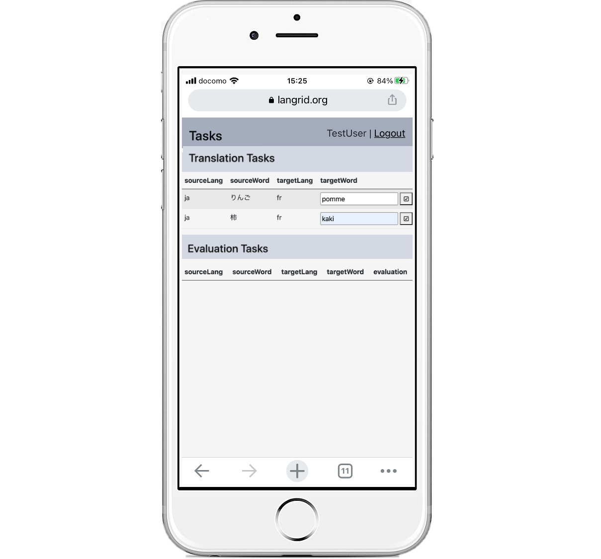
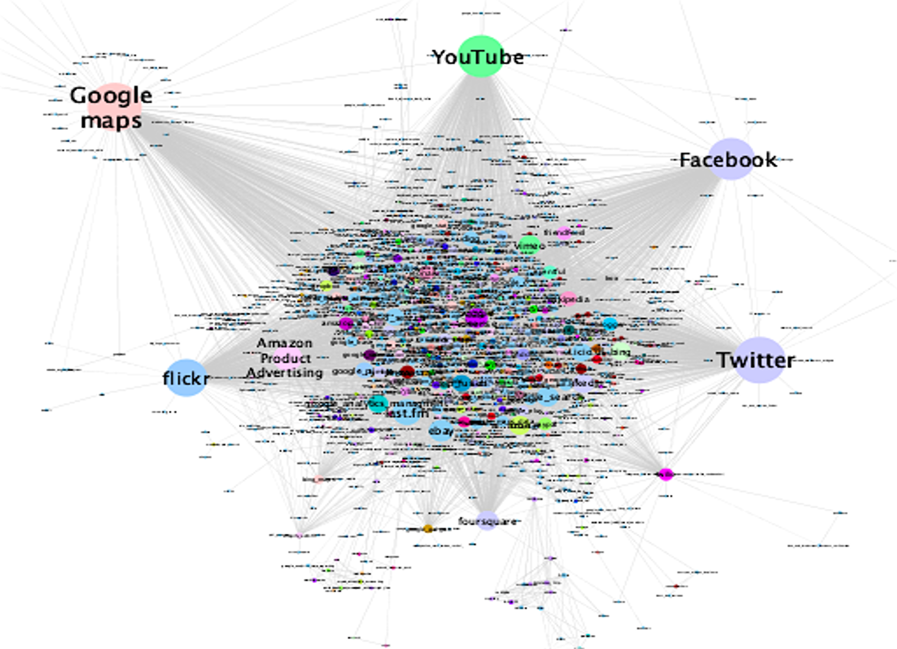

サービス コンピューティング
サービスについて研究しています。 私たちの進行中の作業は次のとおりです。

クラウドソーシングを用いた対訳辞書作成のための品質管理手法
従来のクラウドソーシングを用いた対訳辞書作成では，複数人が作業者に同じ単語や文章を自由に翻訳し， 多数決を取るのが主な手法である。しかしながら，話者の少ない低資源言語の対訳辞書作成にこの手法を適用した場合， 多くの低品質ワーカが多数決に加わることが予想され，多数決による評価の信頼性を保つことが難しくなる。 そこで，信頼ネットワークに基づいて対応言語ペアに精通したワーカーにタスクを割り当てる手法と， いくつかの評価タスクをセットにし，その集合に対する評価列で多数決を行う超問題を用いた回答統合手法を用いることで品質向上を目指す。

ブロックチェーンに基づく分散型クラウドソーシング基盤
ブロックチェーンが人気を博し、様々な分野に応用されています。 私たちの研究室では、クラウドソーシング プラットフォームを分散化することにより、この教えをクラウドソーシングに適用することを研究しています。

グラフ埋め込みを用いた代替サービスのクラスタリング
複数のサービスを組み合わせ、作成された新しいサービスを複合サービスという。 複合サービスは組み合わせ元のサービスよりも拡張された機能を提供できる、既存のサービスを再利用できるなどの利点がある。 例えば、地図情報サービスと天気情報サービスを組み合わせることで、地図上に各地方の天気を表示する複合サービスが作成できる。 このような複合サービスでは、組み合わされた一部のサービスが利用できなくなった場合、連鎖的に複合サービス全体に影響が生じる。 そこで本研究では、複合サービスのサービス依存関係に基づくクラスタリングを行い、利用できなくなったサービスと機能的に類似するサービスを発見する。